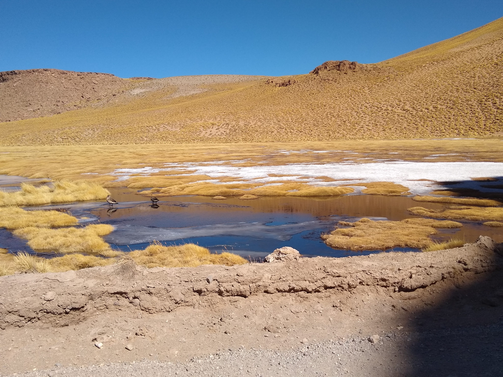
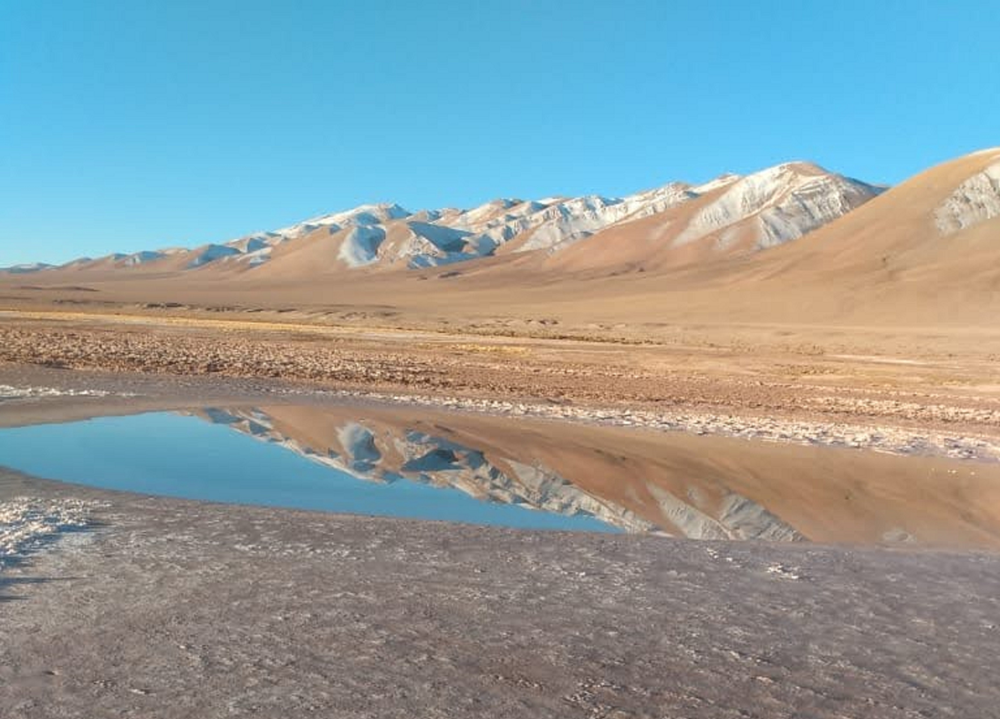
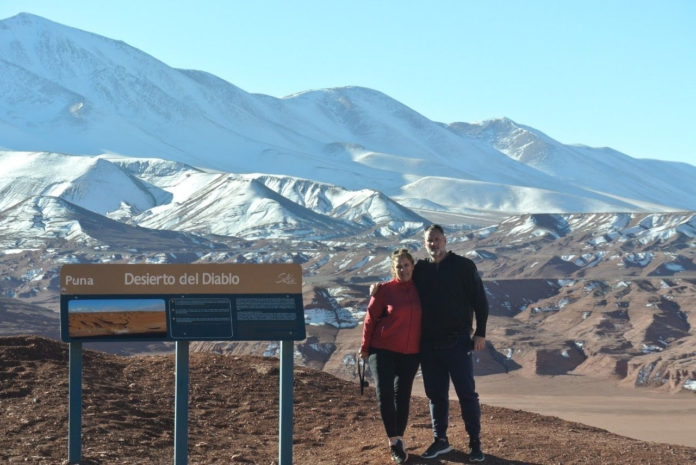
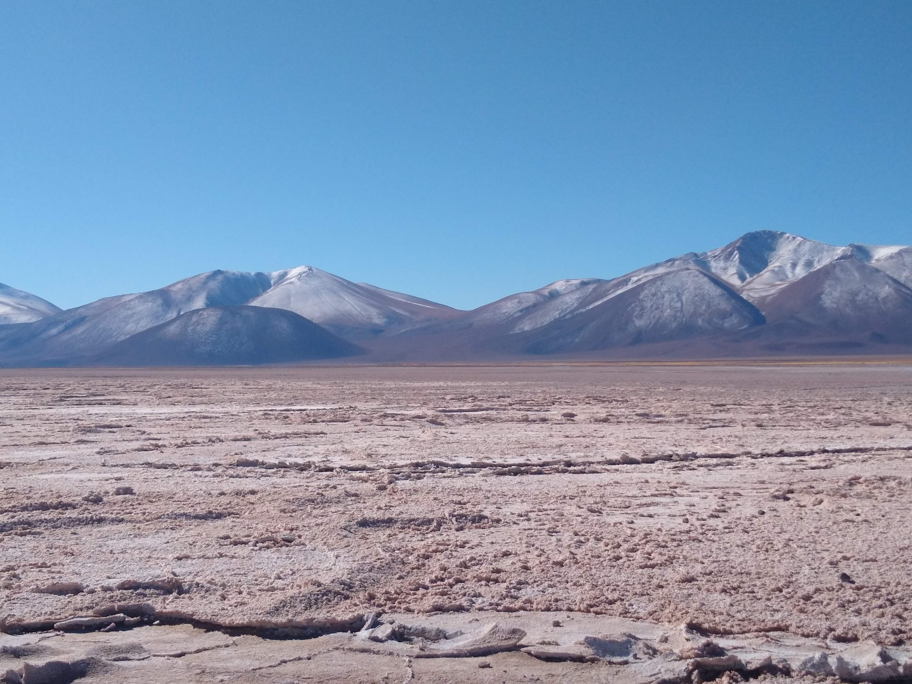
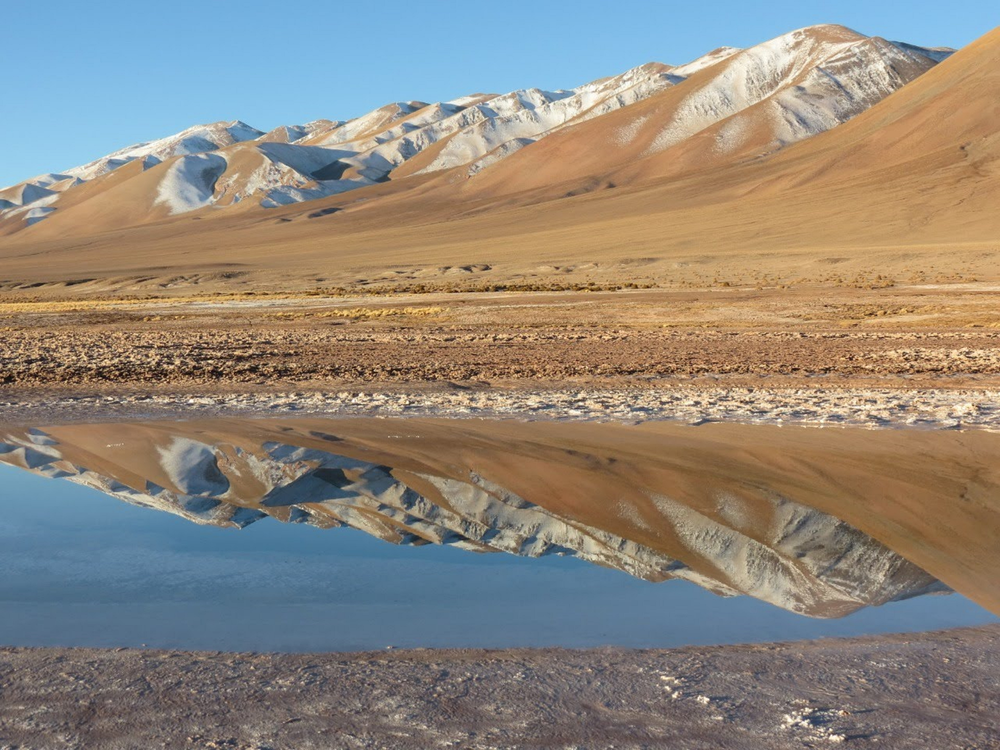
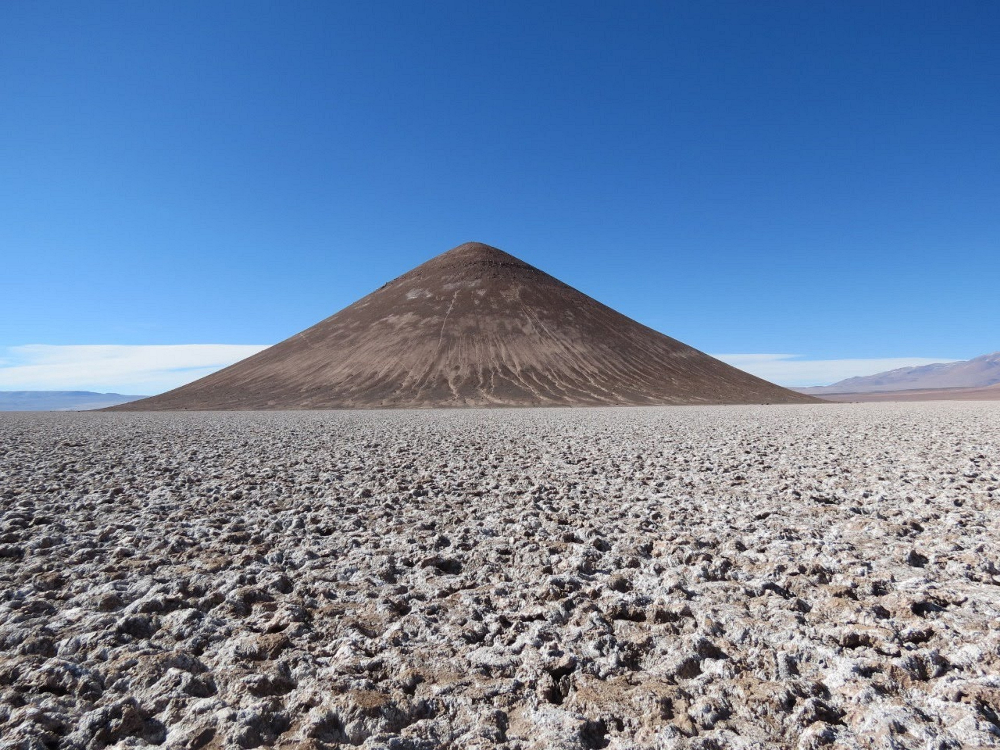
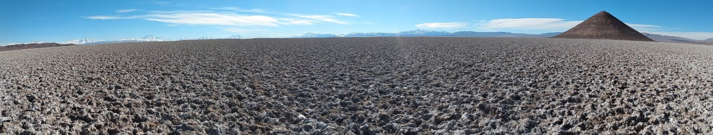
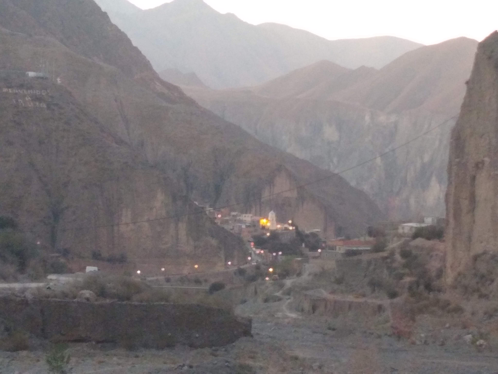
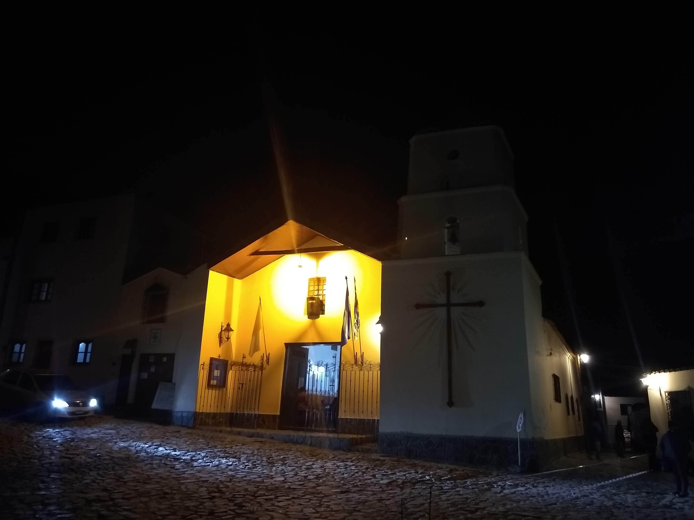

Tolar Grande
"la Naturaleza te sorprende"
|  |  |
Ojo de Mar |
Ojo de Mar |
|  |  |
Desierto del Diablo |
Desierto del Diablo |
|  |  |
Ojo de Mar |
El Cono de Arita |
Camino de Montaña |
Camino de Montaña |
|  |
El Cono de Arita |
Iruya
Es un pueblo de la provincia de Salta (Argentina) cabecera del departamento Iruya. Está ubicado a 2780 msnm, sobre los faldeos orientales de la sierra de Santa Victoria, a 307 km de la capital salteña. Está dentro del perímetro de la reserva de biosfera de las Yungas.
|  |  |
Iruya - vista de la ciudad |
Iruya - Capilla |